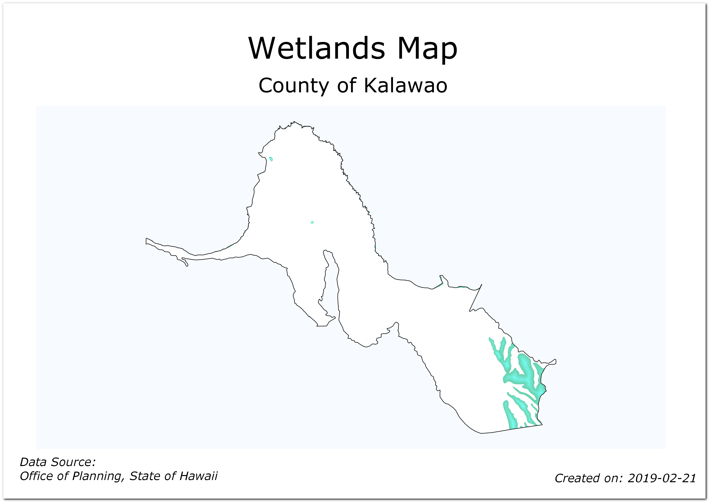
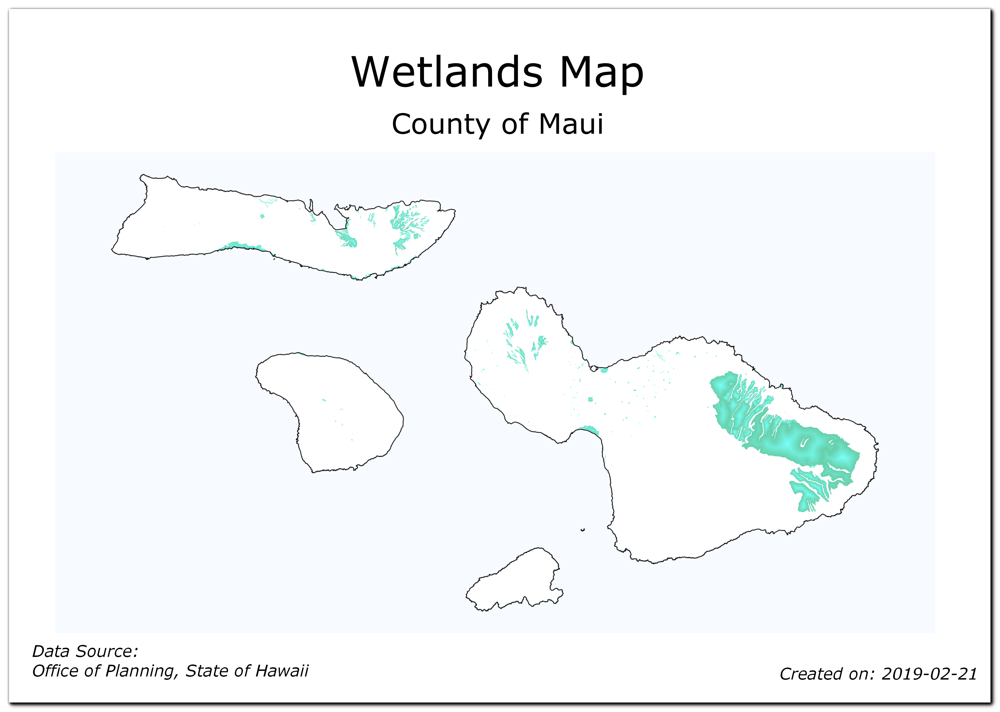
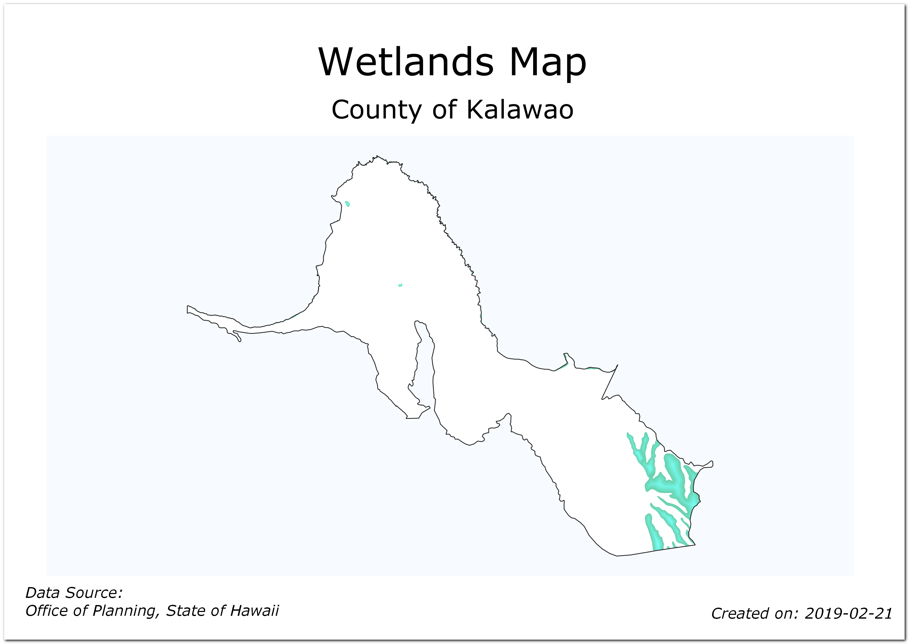
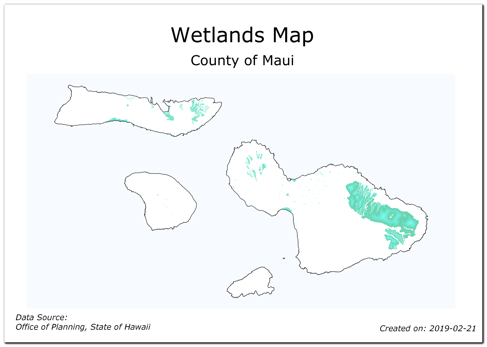

Automatisierung der Kartenerstellung mit dem Drucklayout Atlas (QGIS3)¶
Wenn deine Einrichtung gedruckte Karten oder Online-Karten veröffentlicht, muss man oft viele Karten mit derselben Vorlage erstellen, oftmals bezogen auf eine Verwaltungseinheit oder ein Untersuchungsgebiet. Solche Karten manuell zu erstellen, kann viel Zeit in Anspruch nehmen. Wenn man die Karten zusätzlich häufig aktualisieren möchte, kann sich das zu einer lästigen Aufgabe auswachsen. In QGIS gibt es ein Tool Atlas, das bei der Erstellung und einfachen Veröffentlichung einer großen Anzahl an Karten verschiedener Regionen unterstützt. Wenn du mit dem grundlegenden Drucklayout noch nicht vertraut bist, sieh dir bitte folgende Anleitung an Erstellen einer Karte.
Überbilck über die Aufgabe¶
Diese Anleitung zeigt die Erstellung von Karten der Feuchtgebiete in allen Verwaltungseinheiten Hawaiis.
Weitere Fähigkeiten, die wir erlernen¶
Benutzung des Stils
Umgekehrte Polygoneum Flächen außerhalb von Polygonen zu füllen.Schreiben eines Ausdrucks in der
RegelbasierendenSymbolisierung, um nur das aktuelle Feature im Atlas anzuzeigen.Einen Ausdruck schreiben, um dynamische Beschriftungen im Printlayout zu erzeugen.
Benutzung der Symbolisierung
Shapeburst-Füllungum eine 2-fach gefärbte Polygonfüllung zu erstellen.
Beschaffung der Daten¶
Wir werden folgende Daten verwenden: GIS Data Layers from State of Hawaii - Office of Planning
Lade den Layer Wetlands aus der Kategorie Biologic and Ecologic herunter.
Lade den Layer Census County Boundaries 2010 aus der Kategorie Cultural and Demographic herunter.
Der Einfachheit halber kannst du auch eine Kopie der Datensätze unter folgenden links herunterladen:
Datenquelle [HAWAII]
Arbeitsablauf¶
Gehe zum Datensatz
HI_Wetlands.shp.zipim QGIS Browser und erweitere ihn. Wähle die DateiHI_Wetlands_Poly.shpund ziehe sie in den Arbeitsbereich. Dieser Layer enthält die Polygone der Feuchtgebiete des gesamten Bundesstaates Hawaii.

Da wir für jede Verwaltungseinheit eine Karte der Feuchtgebiete erstellen wollen, benötigen wir einen Layer der Grenzen der Verwaltungseinheiten. Gehe zur Datei
county10.shp.zipund entpacke sie. Wähle die Dateicounty10.shpund ziehe sie in den Arbeitsbereich.

Schalte vorerst die Sichtbarkeit des Layers
HI_Wetlands_Polyab. Man sieht die Polygone des Layerscounty10nun deutlich. Der Layer enthält 5 Features, wobei zu jedem Feature 1 oder mehr Polygone gehören. Die Features repräsentieren 5 Verwaltungseinheiten. Wir werden diesen Layer als Vorgabe für den Kartenumfang verwenden und QGIS so einstellen, dass 5 Karten - für jedes Feature eine - automatisch erzeugt werden.

Schalte die Sichtbarkeit des Layers
HI_Wetlands_Polyein. Gehe zu .

Lasse den Drucklayout Titel leer und klicke OK.

Gehe im Fenster Drucklayout zu .

Ziehe mit gedrückter linker Maustaste ein Rechteck für die Ausdehnung der Karte auf.

In QGIS3 ist das Atlas Bedienfeld standardmäßig nicht sichtbar. Wähle .

Gehe zum Atlas Bereich. Setze einen Haken im Einen Atlas erzeugen Feld.

Wähle
county10als Abdeckungslayer. Dies zeigt an, dass wir 1 Karte für jedes Polygonfeature im Layercounty10erstellen möchten. Wir können zusätzlich Abdeckungslayer verstecken auswählen, so dass das Feature nicht auf der Karte angezeigt wird.
Gehe zum Reiter Elementeigenschaften. Scrolle nach unten und wähle Gesteuert durch Atlas box. Damit wird angezeigt, dass der Karteninhalt in diesem Objekt vom
AtlasTool bestimmt wird.
Bemerkung
Die Schaltfläche Einen Atlas erzeugen im Atlas Reiter muss aktiviert sein, ansonsten kann die Schaltfläche Gesteuert durch Atlas nicht aktiviert werden.

Nach Abschluss der Atlas Einstellungen gehe zu .

Mit der Aktualisierung der Kartenansicht sieht man nun wie die einzelnen Karten aussehen. Man kann sich eine Vorschau der Karte für jede Verwaltungseinheit ansehen. Gehe zu . Der Atlas stellt dann die Karte entsprechend der Ausdehnung des nächsten Features im Abdeckungslayer dar.

Nun fügen wir eine Beschriftung zur Karte hinzu. Geh zu .
Gehe im Reiter Elementeigenschaften zum Abschnitt Haupteigenschaften und klicke den Knopf Einen Ausdruck einfügen….

Die Kartenbeschriftung kann die Attribute des Abdeckungslayers verwenden. Die Funktion
concatwird benutzt, um mehrere Textteile zu einem Textelement zusammenzufügen. In diesem Fall werden wir den Wert des AttributesNAME10des Layerscounty10mit dem TextCounty ofzusammenfügen. Füge den folgenden Ausdruck ein und klicke auf OK.
concat('County of ', "NAME10")

Lösche den noch enthalten Text Lorom ipsum, so dass die Textbox nur noch den Ausdruck enthält. Scrolle nach unten zum Bereich Erscheinungsbild und klicke auf den Auswahlknopf Schriftart dropdown. Wähle die gewünschte Schriftart und Größe aus.

Wähle
Zentriertals Horizontale Ausrichtung undMitteals Vertikale Ausrichtung.

Füge eine weitere Beschriftung hinzu und gebe
Wetlands Mapunter Haupteigenschaften ein. Da hier kein Ausdruck verwendet wird, bleibt der Text auf allen Karten unverändert.

Gehe zu und überprüfe, ob die Kartenbeschriftung wie gewünscht funktioniert. Man merkt, dass die Karte der Feuchtgebiete Polygone enthält, die unschön bis ins Meer hinein reichen. Wir können die Symbolisierung so ändern, dass Flächen außerhalb der Verwaltungseinheiten nicht sichtbar sind.

Wechsele zum QGIS Hauptfenster. Klicke mit der rechten Maustaste auf den Layer
county10und wähle Eigenschaften.

Wähle im Bereich Symbolisierung die Darstellung Umgekehrte Polygone. Mit dieser Darstellungsart wird die Fläche außerhalb eines Polygons gefüllt. Wähle weiß als Füllfarbe aus und klicke auf OK.

Man bemerkt, dass die außerhalb der Verwaltungseinheiten liegenden Polygonteile nun verschwunden sind. In Wirklichkeit sind sie durch die weiße Flächenfüllung der Umgekehrte Polygone Symbolisierung außerhalb der Polygone der Verwaltungseinheiten verdeckt.

Gehe zum Layout Fenster. Wenn wir den Effekt der umgekehrten Polygone sehen wollen, müssen wir den Haken bei Abdeckungslayer verstecken im Atlas Reiter deaktivieren. Nach dem Deativieren sieht das dargestellte Kartenbild sauber aus und Flächen außerhalb des Abdeckungslayers sind nicht sichtbar.

Es gibt noch ein weiteres Problem. Man sieht, dass an einigen Stellen Teile der Karte außerhalb des Abdeckungslayers noch sichtbar sind. Das liegt daran, dass Atlas andere Features nicht automatisch versteckt. Das kann zwar in einigen Fällen nützlich sein, für unseren Zweck wollen wir aber nur die Feuchtgebiete zeigen, die zur jeweils erstellten Karte einer Verwaltungseinheit gehören. Um dies zu erreichen, gehen wir zurück zum QGIS Hauptfenster und klicken mit der rechten Maustaste auf den Layer
county10und wählen Eigenschaften.

Wähle im Bereich Symbolisierung den Eintrag
Regelbasierendfür die Unterdarstellung aus. Mache einen Doppelklick auf die Fläche unter Regel.

Klicke im Fenster Edit rule auf den Knopf Ausdruck neben Filter.

Erweitere im Fenster Ausdruckseditor die Gruppe Variablen. Die Variable
@atlas_featureidbeinhalter die id des aktuell ausgewählten Features. Wir werden einen Ausdruck konstruieren, der nur das aktuell gewählte Atlas Feature auswählt. Gebe den folgenden Ausdruck ein und klicke auf OK.
$id = @atlas_featureid

Schließe alle offenen Dialogfenster und gehe zurück zum Fenster Layout. Wähle das Element Karte 1 und klicke den Knopf Vorschau aktualisieren im Reiter Elementeigenschaften , um die Änderungen zu sehen. Man merkt, dass nun nur die Fläche sichtbar ist, die von der Verwaltungsgebietseinheit bedeckt wird.
Bemerkung
Wenn der Knopf Vorschau aktualisieren, kann es hilfreich sein, zuerst ein anderes Element zu selektieren und danach Karte 1 erneut auszuwählen.

Wir werden jetzt eine weitere dynamische Beschriftung hinzufügen, um das aktuelle Datum anzuzeigen. Gehe zu und wähle den Bereich für die Beschriftung auf der Karte. Klicke auf den Knopf Einen Ausruck einfügen.

Erweitere die Gruppe Datum und Zeit; hier findet man die Funktion
$now. Die Funktion gibt die aktuelle Systemzeit zurück. Die Funktiontodate()konvertiert das Ergebnis in eine Datums Zeichenkette. Gebe folgenden Ausdruck ein und klicke auf OK.
concat('Created on: ', todate($now))

Wir fügen eine weitere Beschriftung zur Datenquelle hinzu. Wie in der Anleitung Erstellen einer Karte beschrieben können z.B. Nordpfeil, Maßstabsleiste usw. der Karte hinzugefügt werden.

Wir werden noch eine letze Verbesserung der Ausgestaltung vornehmen. Gehe zurück zum QGIS Hauptfenster und klicke mit der rechten Maustaste auf den Layer
HI_Wetlands_Polyund wähle Eigenschaften.

Klicke im Bereich Symbolisierung auf Einfache Füllung und wähle
Shapeburst Füllungals Symbollayertyp. Wähle die Option Zweifarbig und wähle die gewünschten Schattierungen von grün und blau. Klicke auf OK.

Wähle das Element Karte 1 und klicke auf Vorschau aktualisieren unter dem Reiter Elementeigenschaften um die Änderungen zu sehen.
Wenn du mit dem Kartenlayout zufrieden bist, gehe zu .

Wähle ein lokales Verzeichnis und klicke auf Choose.

Lasse die Standardeinstellungen unter Image Export Options so wie sie sind und klicke auf Save.
Das Atlas Tool wird nun für jedes Featur des Abdeckungslayers ein Kartenbild mit unserer Kartenvorlage erstellen. Wir finden die Bilder im angegebenen Verzeichnis, sobald die Erstellung abgeschlossen wurde.

Es folgen die erstellen Kartenbilder.


 



If you want to give feedback or share your experience with this tutorial, please comment below. (requires GitHub account)